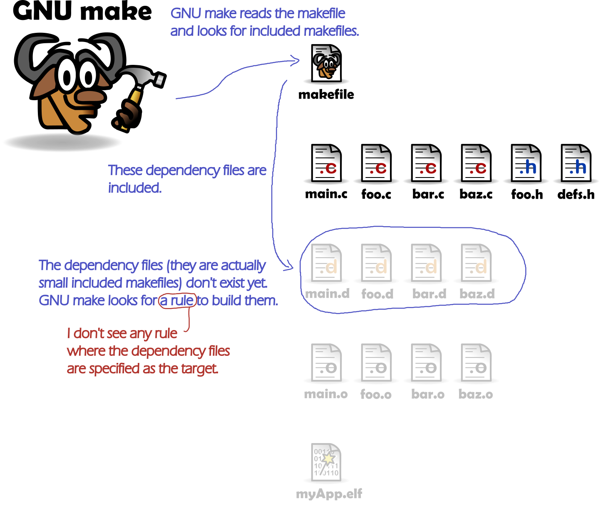
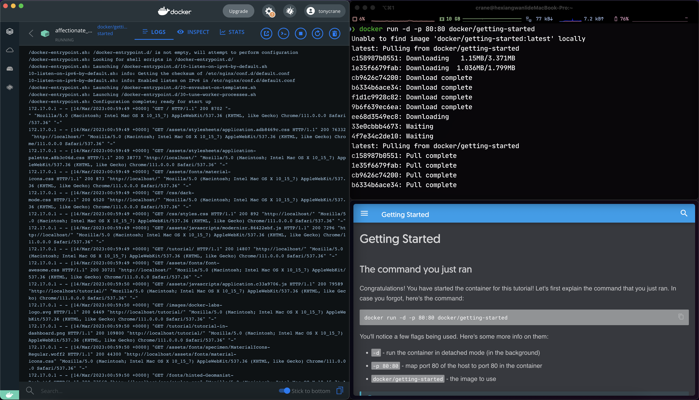

<!DOCTYPE html>
<html lang="en">
  <head>
    <meta charset="utf-8" />
    <meta name="viewport" content="width=device-width, initial-scale=1.0, maximum-scale=1.0, user-scalable=no" />

    <title>lec0 - 2023秋冬实用技能拾遗</title>
    <link rel="shortcut icon" href="./favicon.ico" />
    <link rel="stylesheet" href="./dist/reset.css" />
    <link rel="stylesheet" href="./dist/reveal.css" />
    <link rel="stylesheet" href="./dist/theme/simple.css" id="theme" />
    <link rel="stylesheet" href="./css/highlight/github.css" />
    <script src="https://cdn.jsdelivr.net/npm/reveal.js-menu@2.1.0/menu.js"></script>

    <link rel="stylesheet" href="./assets/custom.css" />

  </head>
  <body>
    <div class="reveal">
      <div class="slides"><section  data-markdown><script type="text/template">

<!-- .slide: data-background="lec0/cover.png" -->

</script></section><section ><section data-markdown><script type="text/template">
<!-- .slide: data-background="lec0/background.png" -->

<div class="middle center">
<div style="width: 100%">

# Part.1 关于课程

</div>
</div>

</script></section><section data-markdown><script type="text/template">
<!-- .slide: data-background="lec0/background.png" -->

## 为什么会有这门课程？

- "The Missing Semester of Your CS Education": [MIT 6.null](https://missing.csail.mit.edu/)
- 掌握一系列常用、好用的工具（包括 Git、Vim、Shell、Markdown 等）
- 增强 CS 专业技能，让你看起来更专业、更像一个 CS 人
    - 推荐阅读：[「如何让自己看上去、闻上去都像一个 CS 人」](https://blog.hobbitqia.cc/p/5948019b.html)（[CC98 版](https://www.cc98.org/topic/5370849)）
- 为以后的学习、工作打下基础
- 培养对 CS 的兴趣
- ...

</script></section><section data-markdown><script type="text/template">
<!-- .slide: data-background="lec0/background.png" -->

## 如何学习这门课程？

- 环境：
    - 推荐使用 Linux/macOS
    - Windows 推荐安装 WSL 或虚拟机
- 牢记两个缩写：
    - RTFM: Read The F**king Manual
    - STFW: Search The F**king Web
        - 百度搜索、百度知道、百度百科、CSDN？❌
        - 必应搜索、谷歌搜索、Wikipedia、GitHub、StackOverflow！✅
- 一定要自己进行实操❗️❗️❗️
- 还没有 GitHub 账号❓赶紧注册
- 不知道怎么运用魔法来上网❓98 上搜搜，这是不能公开碰的滑梯

</script></section></section><section ><section data-markdown><script type="text/template">
<!-- .slide: data-background="lec0/background.png" -->

<div class="middle center">
<div style="width: 100%">

# Part.2 关于讲师

</div>
</div>

</script></section><section data-markdown><script type="text/template">
<!-- .slide: data-background="lec0/background.png" -->

## 关于讲师

- 双周周六——周晨旭
    - 20 级光电信息专业
    - GitHub [@Xuer04](https://github.com/Xuer04)
    - 主页 https://zicx.top/home/
    - 笔记 https://zicx.top/notebook/
- 单周周日——王鹤翔
    - 21 级图灵班信息安全专业
    - 浙江大学 [AAA](https://zjusec.com/) 战队成员
    - B 站知识区 up 主 [@鹤翔万里](https://space.bilibili.com/171431343)（绝赞停更中）
    - GitHub [@TonyCrane](https://github.com/TonyCrane)
    - 主页 https://tonycrane.cc/
    - 笔记 https://note.tonycrane.cc/

</script></section></section><section ><section data-markdown><script type="text/template">
<!-- .slide: data-background="lec0/background.png" -->

<div class="middle center">
<div style="width: 100%">

# Part.3 课程安排/授课方式

</div>
</div>

</script></section><section data-markdown><script type="text/template">
<!-- .slide: data-background="lec0/background.png" -->

## 课程安排

两个教学班：

- 双周周六：
    - 周晨旭主讲
    - 15:00~16:30
    - 线上腾讯会议上课
- 单周周日：
    - 王鹤翔主讲
    - 13:00~14:30
    - 线上钉钉群直播/&hairsp;&hairsp;&hairsp;B 站直播

一共六～七次课程，具体时间可能会略有调整。

</script></section><section data-markdown><script type="text/template">
<!-- .slide: data-background="lec0/background.png" -->

## 双周周六 课程安排

<div class="three-line">

|周数|日期|课程主题|
|:--:|:--:|:--:|
|第二周|3.11|Git / GitHub|
|第四周|3.25|Markdown|
|第六周|4.08|Vim|
|第十周\*|5.6\*|***TBD***\*|
|第十二周|5.20|Terminal / Shell|
|第十四周|6.03|LaTeX|
|第十六周|6.17|GNU Make / Cmake|

</div>

\*: 由于第三次课和第四次课之间跨度较大，计划在第十周加一次线上课程，内容待定。

</script></section><section data-markdown><script type="text/template">
<!-- .slide: data-background="lec0/background.png" -->

## 单周周日 课程安排

<div class="three-line">

|周数|日期|课程主题|
|:--:|:--:|:--:|
|第三周|3.19|Shell 基础及 CLI 工具推荐|
|第五周|4.02|Git/GitHub 基础介绍|
|第七周|4.16|Markdown 语法及应用|
|第八/十周\*|4.23/5.07\*|LaTeX 排版简要介绍|
|第十三周|5.28|如何排出规范、美观的文档|
|第十五周|6.11|Docker 基础介绍|

</div>

\*: 这两周周末都是期中考试周，具体上课时间待定。

</script></section><section data-markdown><script type="text/template">
<!-- .slide: data-background="lec0/background.png" -->

## 单周周日 授课方式

- 时间：单周周日 13:00~14:30，具体安排见前
- 授课地点：
    - 线上授课：
        - 钉钉群直播
        - B 站直播间 [live.bilibili.com/11896070](https://live.bilibili.com/11896070)
- 资料/回放：
    - 课程仓库：[TonyCrane/PracticalSkillsTutorial](https://github.com/TonyCrane/PracticalSkillsTutorial)
    - 课程 slides：[slides.tonycrane.cc/PracticalSkillsTutorial](https://slides.tonycrane.cc/PracticalSkillsTutorial)
    - 课程回放：当次课程结束后会上传至 B 站 [@鹤翔万里](https://space.bilibili.com/171431343)账号上

</script></section></section><section ><section data-markdown><script type="text/template">
<!-- .slide: data-background="lec0/background.png" -->

<div class="middle center">
<div style="width: 100%">

# Part.4 内容前瞻

</div>
</div>

</script></section><section data-markdown><script type="text/template">
<!-- .slide: data-background="lec0/background.png" -->

## Git - 版本控制工具

<div style="text-align: center;">

<p style="margin-top: 0.1em;">lazygit</p>
</div>

</script></section><section data-markdown><script type="text/template">
<!-- .slide: data-background="lec0/background.png" -->

## GitHub - 全球最大的代码托管网站

<div style="text-align: center;">

</div>

</script></section><section data-markdown><script type="text/template">
<!-- .slide: data-background="lec0/background.png" -->

## Terminal/Shell - 用命令行控制电脑

<div style="text-align: center;">

</div>

</script></section><section data-markdown><script type="text/template">
<!-- .slide: data-background="lec0/background.png" -->

## Vim - 命令行中的文本编辑器

- ❗️仅双周周日班详细讲授❗️
- “世界上最好的文本编辑器”

<div style="text-align: center; margin-top: 0.5em;">

</div>

</script></section><section data-markdown><script type="text/template">
<!-- .slide: data-background="lec0/background.png" -->

## Markdown - 轻量级文本标记语言

<div style="text-align: center; margin-top: 0.5em;">

</div>

</script></section><section data-markdown><script type="text/template">
<!-- .slide: data-background="lec0/background.png" -->

## LaTeX - 纯代码式文档排版软件

<div style="text-align: center;">

</div>

</script></section><section data-markdown><script type="text/template">
<!-- .slide: data-background="lec0/background.png" -->

## GNU Make/Cmake - 自动化项目编译执行

- ❗️仅双周周日班详细讲授❗️

<div style="text-align: center; margin-top: 0.5em;">

</div>

</script></section><section data-markdown><script type="text/template">
<!-- .slide: data-background="lec0/background.png" -->

## Docker - 轻量级虚拟化技术/容器化运行

- ❗️仅单周周六班讲授❗️

<div style="text-align: center; margin-top: 0.5em;">

</div>

</script></section></section><section  data-markdown><script type="text/template">
<!-- .slide: data-background="lec0/ending.png" -->
</script></section></div>
    </div>

    <script src="./dist/reveal.js"></script>

    <script src="./plugin/markdown/markdown.js"></script>
    <script src="./plugin/highlight/highlight.js"></script>
    <script src="./plugin/zoom/zoom.js"></script>
    <script src="./plugin/notes/notes.js"></script>
    <script src="./plugin/math/math.js"></script>
    <script>
      function extend() {
        var target = {};
        for (var i = 0; i < arguments.length; i++) {
          var source = arguments[i];
          for (var key in source) {
            if (source.hasOwnProperty(key)) {
              target[key] = source[key];
            }
          }
        }
        return target;
      }

      // default options to init reveal.js
      var defaultOptions = {
        controls: true,
        progress: true,
        history: true,
        center: true,
        transition: 'default',
        slideNumber: true,
        menu: {
          themes: false,
          width: "wide",
          transitions: false,
          markers: true,
          hideMissingTitles: true,
          openButton: true,
          openSlideNumber: true,
          custom: [
            { title: 'Lectures', icon: '<i class="fas fa-external-link-alt">', content: getLecturesMenu() },
          ]
        },
        plugins: [
          RevealMarkdown,
          RevealHighlight,
          RevealZoom,
          RevealNotes,
          RevealMath.KaTeX,
          RevealMenu
        ]
      };

      // options from URL query string
      var queryOptions = Reveal().getQueryHash() || {};

      var options = extend(defaultOptions, {"transition":"slide","transitionSpeed":"fast","center":false,"slideNumber":"c/t","width":1000}, queryOptions);

      function getLecturesMenu() {
        var lectures = [
          { name: "#0 前瞻：通往 Pro 的第一步", src: "../lec0/"},
          { name: "#1 Shell 基础及 CLI 工具推荐", src: "../lec1/"},
          { name: "#2 Git/GitHub 基础介绍", src: "../lec2/"},
          { name: "#3 Markdown 语法及应用", src: "../lec3/"},
          { name: "#4 LaTeX 排版简要介绍", src: "../lec4/"},
          { name: "#5 如何排出规范、美观的文档", src: "../lec5/"},
          { name: "#6 网络/网站基础知识概述", src: "../lec6/"},
        ]
        var lecturesMenu = '<ul class="slide-menu-items">';
        for (var i=0; i < lectures.length; i++) {
          lecturesMenu += '<li class="slide-menu-item"><a href="' + lectures[i].src + '" style="text-decoration:none">' + lectures[i].name + '</a></li>';
        }
        lecturesMenu += '</ul>';
        return lecturesMenu;
      }
    </script>

    <script src="https://cdn.tonycrane.cc/heti/heti.js"></script>
    <script src="./assets/heti_worker.js"></script>

    <script>
      Reveal.initialize(options).then(() => {
        document.querySelector(".backgrounds").setAttribute("style", document.querySelector(".slides").style.cssText);
      });
      Reveal.on('overviewshown', event => {
        document.querySelector(".backgrounds").setAttribute("style", "");
      });
      Reveal.on('overviewhidden', event => {
        document.querySelector(".backgrounds").setAttribute("style", document.querySelector(".slides").style.cssText);
      });
      Reveal.on('resize', event => {
        document.querySelector(".backgrounds").setAttribute("style", document.querySelector(".slides").style.cssText);
      });
    </script>
  </body>
</html>